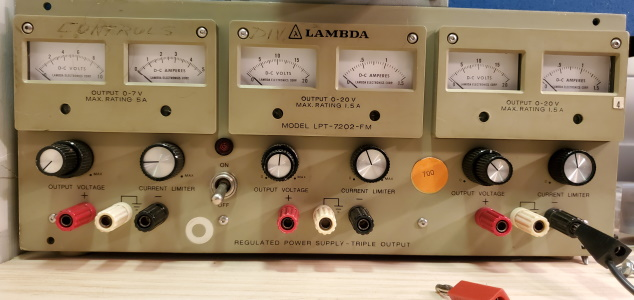
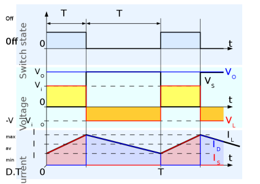
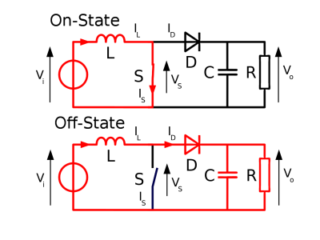
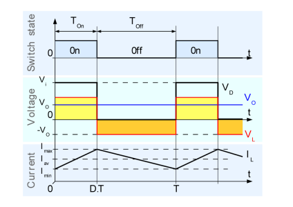
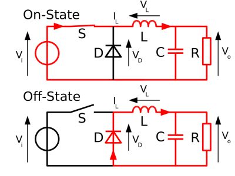

Ever since I started modding and building Vintage Microcomputers I had the need for a Powersupply that could provide several Voltages at once. Many early Microprocessors or Memory Chips need the regular TTL Voltage which is +5V, but +12V and -5V as well. Additionally, +12V and -12V are often used by analog circuitry. As you can see, thoose are a couple of Voltages, and Powersupplys that can provide four at the same time can get really expensive. Common ones for example are the Philips PE 1542 or the Lambda LPT-7202-FM (Picture is thankfully provided by Commodore Z). Because I don't own such a nice device, it was clear for me that I wanted to build my own one, especially because I need one for my DREAM 6800 Microcomputer.
There are a hundreds of ways to build a Powersupply, but they can basically be seperated into passive and active regulation:
-Passive power supplies basically regulate the Voltage by using resistors, capacitors and inductors. If you want to get a very stable voltage output, the circuitry for this has to be very accurate and can get pretty complicated.
-Active power supplies use semiconductors to actively control the output voltage, and thus have a way more accurate output voltage, with a minimum amount of required components.
Because I want to use my power supply for sensitive electronics, I need a stable votage, so a active power supply is the way to go. There are several ways to accomplish this, most common are the (LM)78XX linear voltage regulators.
Thoose have three pins and only need a few smoothing capacitors, and work by coverting excessive energy/voltage into pure heat. They are only recommended for small amounts of Power, because otherwise you can use them as a soldering iron instead. Imagine you have a input voltage of 24V, a output voltage of 12V and a current of 1,5A, this would make a loss of 18W.
Then there are low droput voltage regulators, which work almost exactly like linear voltage regulators, but accept a voltage which can be very close to the output voltage and thus allow a far lower power loss/heat dissipation.
Another choice are switched mode converters, which can be divided into step-up and step-down converters. They work by rapidly switching the output on and off, to keep the voltage at a stable value. Step-up/boost converters accept a voltage which is below the output voltage, and step it up to the desired output voltage. Step-Down/buck converters on the other hand need a input voltage above the desired output voltage, and lower the voltage. This type of converter needs a few more essential parts, an inductor to maintain the output current while switching, a diode to provide a return path for the inductor current when the switch is off, and capacitors to keep the voltage stable.
Finally, I decided to use the LM2576 step-down converters, because 1. they work very efficiently, 2. they can sustain a stable output voltage, 3. they can provide a high outut current(up to 3A) and 4. have a current limit protection.
The Function of a step-up converter is described below:
 The Function of a step-down converter can be seen here:
 (Pictures taken from en.wikipedia.org and made by "Cyril BUTTAY", slightly changed by me)
Folowing the design recommendation from the datasheet of the LM2576, I created the schematic. The only notable addition I made was adding shunts to measure the current, and connecting them to a analog meter.
Now I can start assembling it.
This page was last modified .